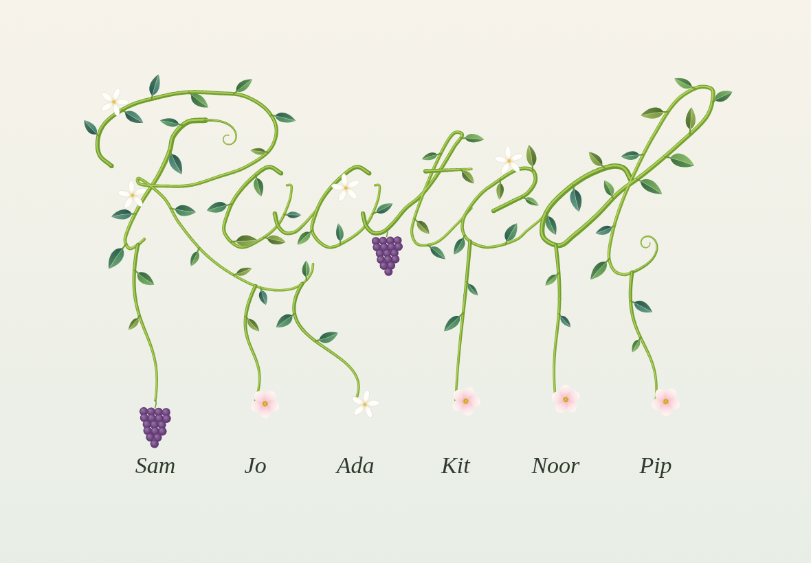
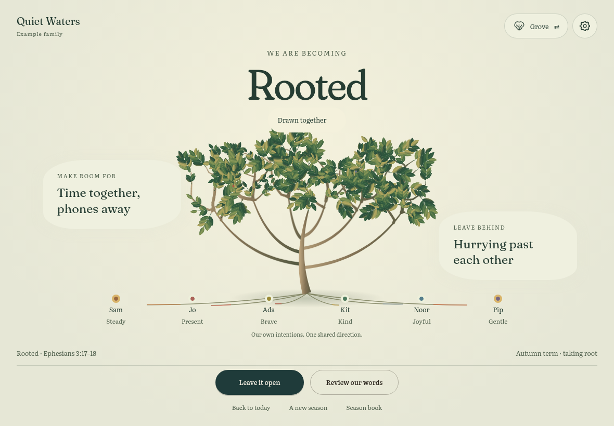

Existing word-writing vine · asset render

The original mature vine, rendered with its original geometry and drawing code. This is an asset render, not its application shell.
The grove · working family board

Separate personal boughs join one root, keep their identity, and move together. The board also holds a concrete yes and no.